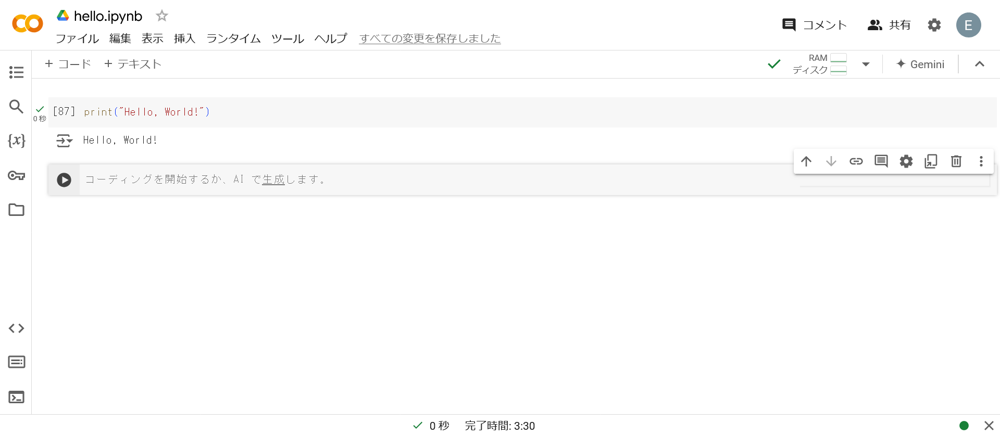
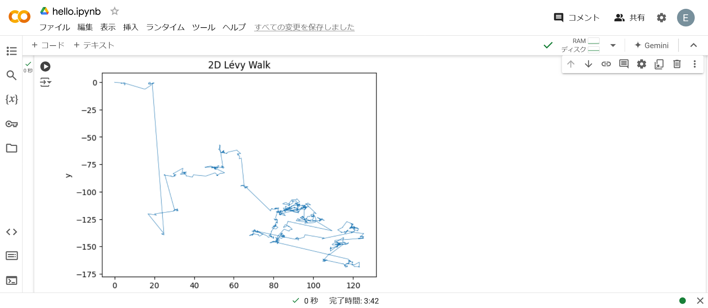

Python#
Pythonはインタプリタ言語です.
Hello, World!#
以下は, Pythonで標準出力をする例.

解説#
特にありません.
レヴィウォーク#
味気ないため, レヴィウォークのシミュレーション例を以下に示します.

なお, コードは以下の通りです.
import numpy as np
import matplotlib.pyplot as plt
def gamma(x):
from scipy.special import gamma as gamma_func
return gamma_func(x)
def random_normal():
return np.random.normal()
def mantegna(beta):
if beta < 0.005:
beta = 0.005
t = gamma(1 + beta) * np.sin(np.pi * beta / 2)
t = t / (gamma((1 + beta) / 2) * beta * 2 ** ((beta - 1) / 2))
sigma = t ** (1 / beta)
u = random_normal() * sigma
v = random_normal()
return u / (np.abs(v) ** (1 / beta))
def levy_walk(steps, beta):
x, y = np.zeros(steps), np.zeros(steps)
for i in range(1, steps):
theta = np.random.uniform(0, 2 * np.pi)
r = mantegna(beta)
x[i] = x[i-1] + r * np.cos(theta)
y[i] = y[i-1] + r * np.sin(theta)
return x, y
steps = 1000
beta = 1.5
x, y = levy_walk(steps, beta)
plt.plot(x, y, lw=0.5)
plt.title('2D Lévy Walk')
plt.xlabel('x')
plt.ylabel('y')
plt.show()
解説#
過去にHTML+JSで作成したシミュレーションがあったのでこちらを参照してください.